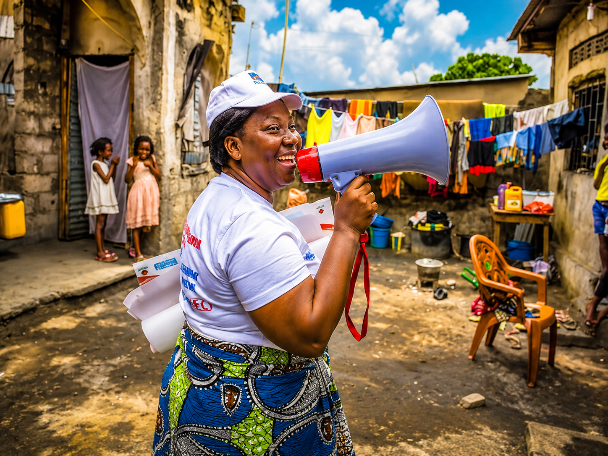
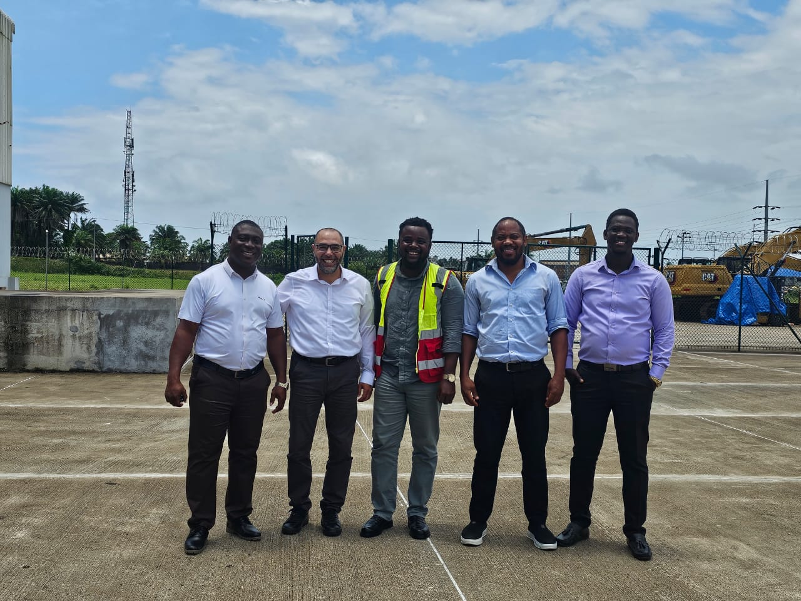
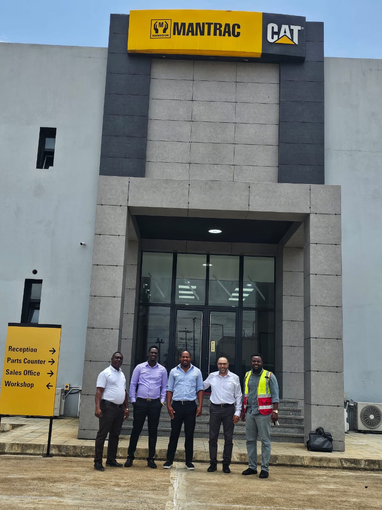
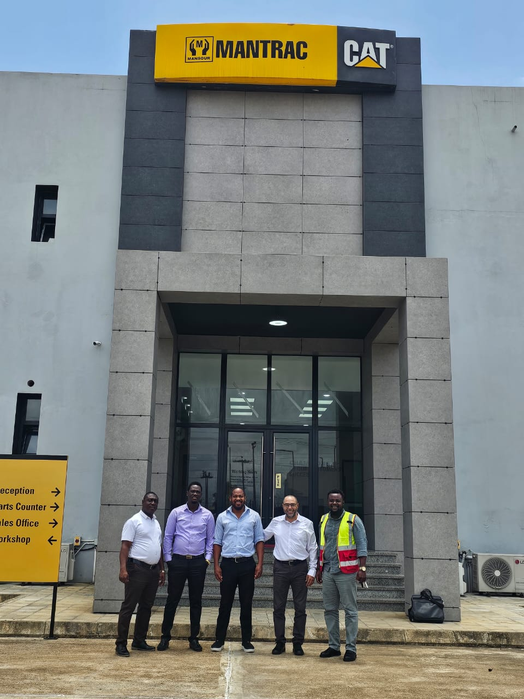

Company News
Leadership, partnerships, and institutional updates.
Follow official company announcements, project milestones, field activities, and media updates from RISE Consulting Group—sharing the work and ideas supporting sustainable development across Liberia.

Explore the updates that share our work, partnerships, public announcements, and technical engagements.
Leadership, partnerships, and institutional updates.
Approved milestones, field activities, and delivery highlights.
Official statements and public announcements.
Conferences, trainings, workshops, and technical engagements.
News and milestones from our work with partners across Liberia.
September 30, 2026
On September 30, 2026, the Resilience Institute for Sustainability and Environment Consulting Group signed a contract agreement with Mantrac CAT, Liberia to undertake a property valuation assignment. Our Founder and Technical Manager Pope Alexander G. Wrehyou signed on behalf of RISE, marking an important milestone in our commitment to providing professional, evidence-based consultancy services in Liberia.




Stay informed. Follow RISE Consulting Group for official announcements, project milestones, partnerships, and updates on our consultancy work across Liberia.
For interviews, expert commentary, company information, or approved media assets, use the website contact form and include your outlet, deadline, and request.
Approved media resources may be requested from the RISE team.
Connect with RISE Liberia for expert commentary and science-led insight on environmental, climate, and engineering challenges.